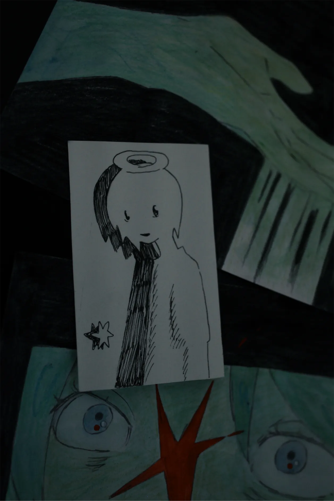

小島 みどりこ
みどりこさんの作品は
視覚として絵を見ているだけで
「感覚」が強く刺さってくるので
良くも悪くも、自分にとって結構心臓に来ます
ひとつひとつの作品にこもっているものや
どういう感情で描いているのか、とかも
絵を見れば分かるというか
絵をみることで感覚として入ってくる感じ。
自分はもう昔ほど自分自身に期待していないけど
みどりこさんの作品をみると未だに
「自分もこういう気持ちになれるものをつくりたい。
でも絵や写真、その他どんな方法でも
今世の自分にはこんな世界はつくれない」
と、絶望してじっくり作品をみられない日とかも
勝手にあったりするんですけど
それでも新作があがると
毎回プロフィールまで飛んで
過去作品まで一通り遡ったりして、
「ああこの人の絵やっぱり好きだな」と心底思うんですよね
なんというか簡単に言ってしまえば
ほんとに自分に刺さる絵を描く人で
自分にとって意味のある絵を描いてくれる人、です
みどりこさんの心という
ひとつの閉じた世界から
実際にそれが絵として生まれるまでの距離、
さらにそれが作品として誰かの手元に渡るという
そこまでの過程も
短い道のりではないと感じているので
申し訳なさすら感じるくらいに
みどりこさんの原画が自分の手元にあること
ありがたいことだと思っている
引っ越し直後に訪れたグループ展で
みどりこさんが実際にその場で絵を描いていて、
その空間に居合わせられただけで
東京に来てよかったなと
初めて思えた日だったことを覚えているし
amazarashiのライブへ行っている時は
いまリアルタイムでみどりこさんと同じ時を共有している…！
と、勝手にうれしく思っている
そうやって交わらない平行線でいいから
幸運にも同じ時代、同じ音楽を聴いて、
生きているこの世界で
この先もひっそりと作品をみていたいな
そうやって静かに熱く
みどりこさんの作品に救われているひとが
ほんとにたくさんいるのだろう、と思うので
秋田さんにも思っていることだが
みどりこさんもまじで無理せず制作してほしい
それに尽きます
